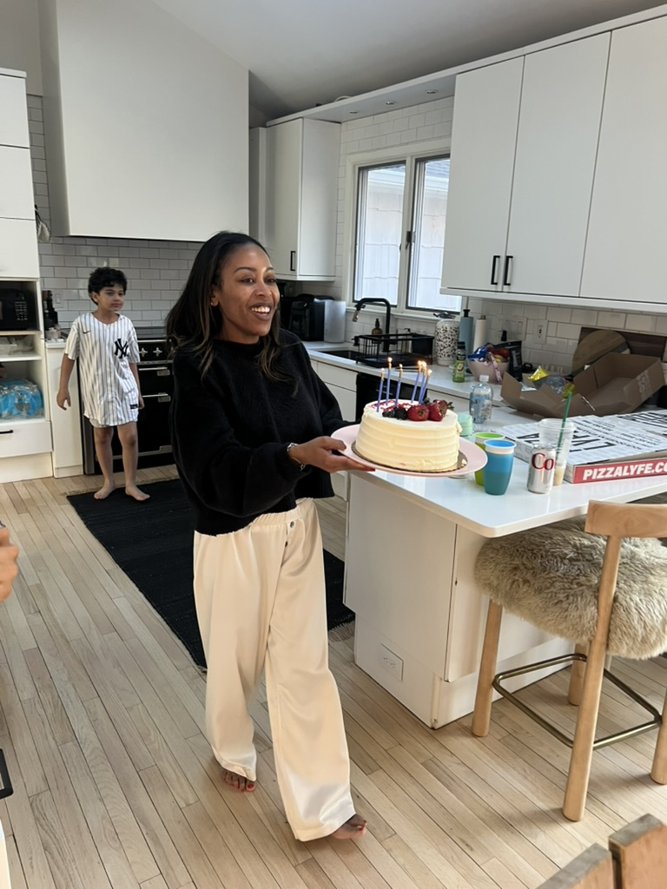

First — the childlings seem to have come directly from her body, through a gruesome scientific experiment.

Despite that, she seems to love them.

Every year she leads an elaborate ritual called "Birth Day" for each child — to remember the day of their science experiment.



We have proof that she brought her kidling to visit other leaders, in their castle.

Also — her daughter is clearly a princess, which makes her a queen, according to human rules.


Queens are leaders. We searched if there was a king nearby but could not find one. The childlings shrugged. So we conclude she is the leader.
She is also the Chief of all Knowledge, because she is in charge of the books.

Remarkably, she also does a lot of the cleaning.

When she asked the childlings to help clean, there was a rebellion. She got very angry.

The children seem to have defeated her — but it was a friendly enough battle.

Now she has found ways to get their help, peacefully.
But she's definitely in charge. No question about that. You don't get rebelled against if you're not in charge.
She also handles the grooming of the childlings.

And she just seems like a good person to have as a mom.


Finally — her style is perfect. So we have decided she also should be the leader.